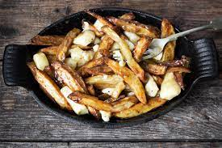

Poutine

Description
Poutine is a popular Canadian dish that originated in Quebec. It consists of a delectable combination of crispy french fries topped with fresh cheese curds and smothered in rich, savory gravy. The contrasting textures and flavors of the dish create a delightful and indulgent culinary experience.
Ingredients
Poutine Gravy:
- 3 Tbsp cornstarch
- 2 Tbsp water
- 6 Tbsp unsalted butter
- 1/4 cup unbleached all purpose flour
- 20 oz beef broth
- 10 oz chicken broth
- Pepper, to taste
For Deep Fried Fries:
- 2 lbs Russet Potatoes
- Peanut or other frying oil
Toppings:
- 1 - 1 1/2 cups white cheddar cheese curds, (Or turn chunks of mozzarella chese would be the closest subsitution)
Instructions
- Prepare the gravy: In a small bowl, dissolve the cornstarch in the water and set aside.
- In a large saucepan, melt the butter. Add the flour and cook, stirring regularly, for about 5 minutes, until the mixture turns golden brown.
- Add the beef and chicken broth and bring to a boil, stirring with a whisk. Stir in about HALF the cornstarch mixture and simmer for a minute or so. If you'd like your gravy thicker, add a more of the cornstarch mixture, in small increments, as needed, to thicken. Season with pepper. Taste and add additional salt, if necessary, to taste. Make ahead and re-warm or keep warm until your fries are ready.
- For Deep-Fried Fries: Prepare your potatoes and cut into 1/2-inch thick sticks. Place into a large bowl and cover completely with cold water. Allow to stand at least one hour or several hours. When ready to cook, heat your oil in your deep fryer or large, wide, heavy cooking pot to 300° F.
- Remove the potatoes from the water and place onto a sheet of paper towel. Blot to remove as much excess moisture as possible.
- Add your fries to the 300°F oil and cook for 5-8 minutes, just until potatoes are starting to cook but are not yet browned. Remove potatoes from oil and scatter on a wire rack. Increase oil temperature to 375°F Once oil is heated to that temperature, return the potatoes to the fryer and cook until potatoes are golden brown. Remove to a paper towel-lined bowl.
- To Prepare Poutine: Add your fried or baked fries to a large, clean bowl. Season lightly with salt while still warm. Add a ladle of hot poutine gravy to the bowl and using tongs, toss the fries in the gravy. Add more gravy, as needed to mostly coat the fries.
- Add the cheese curds and toss with the hot fries and gravy. Serve with freshly ground pepper. Serve immediately.
Calories
Carbohydrates
Protein
Fat
Saturated Fat
Cholesterol
Sodium
528kcal
70g
10g
24g
14g
61mg
1068mg